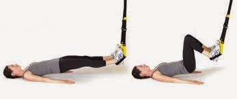

Welcome to Tipos de ejercicios de piernas
5 ejercicios para piernas| OCU
2021.06.22 15:36Skip to main content ÚNETE A OCU Volver Compara e infórmate Movilízate - Acciones OCU Reclama Conoce OCU Compara e infórmate Alimentación Adelgazar Agua Alimentos Café Comer bien Seguridad alimentaria Vino Coches Bicicletas y patinetes Coches Gasolina y carburantes GPS Neumáticos Seguros de coche Consumo y familia Bebés y niños Compras online Consumo sostenible Coronavirus Derechos del consumidor Divorcio, pareja Supermercados Viajes y vacaciones Dinero y seguros Comunidad de propietarios Cuenta bancaria Herencia Hipotecas Jubilación Depósitos e inversión Préstamos y financiación Renta e impuestos Seguros Seguros de coche Seguros de salud Tarjetas Trabajo y paro Electrodomésticos Aspirador Cocina Frigoríficos Lavadora Microondas Pequeños electrodomésticos Planchas Secadora Lavavajillas Salud Bienestar y prevencion Corazón Coronavirus Cuidado de la piel Derechos del paciente Enfermedades Medicamentos Seguros de salud Tecnología Antivirus Audio y video Cámaras de fotos Cámaras de video Ereaders Impresoras Internet y telefonía Ordenador y tableta Smartwatches y pulseras de actividad Teléfono Televisión Vivienda y energía Aire acondicionado Calefacción Colchones Comprar, vender, alquilar Energías renovables Equipamiento del hogar Gas y luz Compra al mejor precio Los mejores productos, al mejor precio Movilízate - Acciones OCU Todas las acciones Rebaja del IVA de la luz Stop cacas: aceras limpias Apostar no es jugar Madrid Central: ¿norma anulada? ¡sanción nula! IRPF de segunda residencia Contra la publicidad de alimentos no saludables Euríbor: un trato es un trato Volkswagen ¡Repara mi motor! Contra la obsolescencia de los iPhone 6 Afectado por el cierre de Dentix Afectados Coronavirus Participa en las comunidades Reclama Reclama a una empresa Ver reclamaciones públicas Mis reclamaciones Clasificación de empresas Modelos de reclamación Generador de escritos Conoce OCU Quiénes somos Contacto Ventajas para socios Hazte socio OCU Plus Las revistas Guías prácticas Tienda online Trabaja con nosotros OCU Plus Contactar Hazte socio OCU Inversiones OCU Inmobiliario Institucional y prensa
Identifícate para ver contenidos personalizados
EntraContacta con nuestros expertos
Asesoría jurídica, todos los comparadores y mucho más
OFERTA EXCLUSIVA DIGITAL
OCU ocu inversiones OCU Inmobiliario Más páginas de OCU Institucional y prensa Programa OCU Plus Tienda online Compara e infórmate Te ayudamos a elegir Todos los comparadores Más de 100 comparadores de productos y servicios Calidad, características, precios Ver todos los comparadores Alimentación Adelgazar Agua Alimentos Café Comer bien Seguridad alimentaria Vino Coches Bicicletas y patinetes Coches Gasolina y carburantes GPS Neumáticos Seguros de coche Consumo y familia Bebés y niños Compras online Consumo sostenible Coronavirus y los consumidores Derechos del consumidor Divorcio, pareja Supermercados Viajes y vacaciones Dinero y seguros Comunidad de propietarios Cuenta bancaria Herencia Hipotecas Jubilación Depósitos e inversión Préstamos y financiación Renta e impuestos Seguros Seguros de coche Seguros de hogar Seguros de salud Tarjetas Trabajo y paro Electrodomésticos Aspirador Cocina Frigoríficos Lavadora Microondas Pequeños electrodomésticos Planchas Secadora Lavavajillas Salud Bienestar y prevencion Corazón Coronavirus: toda la información Cuidado de la piel Derechos del paciente Enfermedades Medicamentos Seguros de salud Tecnología Antivirus Audio y vídeo Cámaras de fotos Cámaras de video Ereaders Impresoras Internet y telefonía Ordenador y tableta Smartwatches y pulseras de actividad Teléfono Televisión Vivienda y energía Aire acondicionado Calefacción Colchones Comprar, vender, alquilar Energías renovables Equipamiento del hogar Gas y luz Barómetro de Obsolescencia Barómetro de Obsolescencia Programada Barómetro de Obsolescencia Prematura Compra al mejor precio Ahorra en tus compras Los mejores productos, al precio más barato Ver dónde Movilízate Campañas y acciones colectivas Todas las acciones Rebaja del IVA de la luz Stop cacas: por unas aceras limpias Apostar no es jugar Madrid Central: ¿norma anulada? ¡sanción nula! IRPF de segunda residencia Contra la publicidad de alimentos no saludables Euríbor: un trato es un trato Volkswagen ¡Repara mi motor! Contra la obsolescencia de los iPhone 6 Afectado por el cierre de Dentix Gastos Hipotecarios Afectados Coronavirus Participa en las comunidades Reclama Defendemos tus derechos Reclama a una empresa Ver reclamaciones públicas Mis reclamaciones Clasificación de empresas Modelos de reclamación Generador de escritos ENTRA | Regístrate Estás aquí Salud : Bienestar y prevención 5 ejercicios para piernas Consejos5 ejercicios para piernas
Compartir en Facebook Compartir en Twitter Compartir en WhatsApp E-Mail Close overlay Enviar por email Print Seguir Seguir - Bienestar y prevenciónLas piernas son parte esencial de cualquier tipo de actividad física. Mantener unas piernas en forma está al alcance de todos. Todo es cuestión de realizar unos sencillos ejercicios para piernas centrados en los diferentes grupos musculares que forman parte del tren inferior, sin necesidad de salir de casa ni utilizar ningún aparato.
Ejercicios para piernas en casa
1. Sentadillas
Ponte de pie con las piernas separadas, situando cada pie en paralelo con los hombros. Con la mirada al frente, flexiona las piernas, descendiendo los glúteos en dirección al suelo, manteniendo sin levantar las plantas de los pies. Mientras desciendas, la espalda debe estar recta y las rodillas y la cadera flexionadas. Si el movimiento está bien ejecutado, las rodillas no deben sobresalir más allá de la punta de los pies y la flexión de las rodillas no debe determinar un ángulo inferior a 90 grados entre muslos y parte inferior de las piernas. Puedes congelar la posición unos 20 segundos. Desde esta misma posición, asciende lentamente para volver a descender de nuevo. El peso debe recaer sobre los talones y no sobre la punta del pie.
Sabrás que has realizado el ejercicio de sentadillas correctamente si notas la fuerza en los glúteos y en el cuádriceps de los muslos.
2. Zancadas alternas
La posición inicial es en cuclillas y con las manos posicionadas en la cadera. Adelanta una pierna y la otra, alternativamente. Ten en cuenta que la pierna que se encuentre levantada no debe superar un ángulo de 90 grados.
Es un perfecto ejercicio para tonificar piernas y muslos si eres constante. Lo recomendable son dos series de catorce repeticiones. Se puede alternar el estiramiento de la pierna con la contracción de la misma, manteniendo el muslo paralelo al tronco.
3. Burpees
Es un movimiento en el que participan una gran cantidad de músculos como, por ejemplo, los glúteos y los cuádriceps. El ejercicio consiste, básicamente, en colocarnos de cuclillas, con las manos apoyadas en el suelo, y, desde esa posición, estirar las piernas hacia atrás y, seguidamente, volver a la posición inicial. Tras estirar las piernas, debemos finalizar el movimiento con un salto vertical.
4. Puente
Túmbate boca arriba con las piernas flexionadas. A continuación, levanta la cadera y permanecer inmóvil durante 20 segundos. Repite el ejercicio 3 veces.
Principalmente, este ejercicio trabaja el bíceps femoral y los glúteos.
5. Gemelos
Sitúate de puntillas y permanece estático durante 20 segundos. Descansa durante un minuto y repite el ejercicio 3 veces.
También se pueden hacer series estirando y contrayendo los gemelos. Para ello, sitúate con las puntas de los pies en un escalón, ponte de puntillas y baja lentamente hasta que el talón quede por debajo de la línea del escalón. De este modo, el movimiento y la contracción del gemelo serán más amplios.
Contenidos relacionados
Informes
Drenaje linfático, 5 cosas que debes saber El método Pilates y sus beneficios para la salud Taping, kinesiotape o vendaje neuromuscular Cómo elegir zapatillas para correr Ciática: causas y tratamiento Juanetes: Qué son, Tratamientos, Causas, Síntomas Lesiones del pie: fascitis plantar Tendinitis: causas y remediosNoticias
La polución mata a 20.000 españoles cada año Cómo combatir el asmaConsejos
Muévete y gana salud Consejos de un fondista: ¿cómo correr? ¿Cómo se cura el esguince de tobillo? ComunidadSalud y nutrición
Conversaciones relacionadas
Cómo Reducir Grasa de la Cintura Rápido? 570 Visualizaciones 8 Respuestas 0 Votos ¿Complementos alimenticios o suplementos alimenticios? 1111 Visualizaciones 12 Respuestas 2 Votos Esta dieta es buena? 554 Visualizaciones 5 Respuestas 1 Votos La dieta sin gluten y la pérdida de peso 348 Visualizaciones 1 Respuestas 0 Votos Participa en la conversación Compartir en Facebook Compartir en Twitter Compartir en WhatsApp E-Mail Print Seguir Seguir - Bienestar y prevención ¿Quieres recibir nuestra Newsletter? Crea una cuenta913 009 151
Llámanos! De L a V de 9 a 18 h (Agosto: de 8 a 14 h.)
Contactar Revistas Hazte socioÚnete a nosotros
Reclama con OCU Movilízate con OCU Compara con OCU Participa en las comunidades OCU Plus Trabajar en OCULos más populares
Televisores Sillas de coche Colchones Planchas Hornos HipotecasConoce OCU
Quiénes somos Qué te ofrecemos Memoria OCU Proyectos europeos Preguntas frecuentes Estatutos de OCUServicios OCU
Tienda online Modelos Apps © 2021 OCU Condiciones generales de contratación de socios Condiciones generales de contratación de simpatizantes Política de privacidad Uso del nombre y de los signos de OCU Aviso Legal Política de cookies ¡DESCUBRE COMO OCU TE PUEDE AYUDAR!Accede a tu cuenta para realizar esta acción
Puedes guardar artículos para leer más tarde o seguir tus temas favoritos
Acceder Registrarse
Accede a tu cuenta para realizar esta acción
Puedes guardar artículos para leer más tarde o seguir tus temas favoritos
Acceder Registrarse
